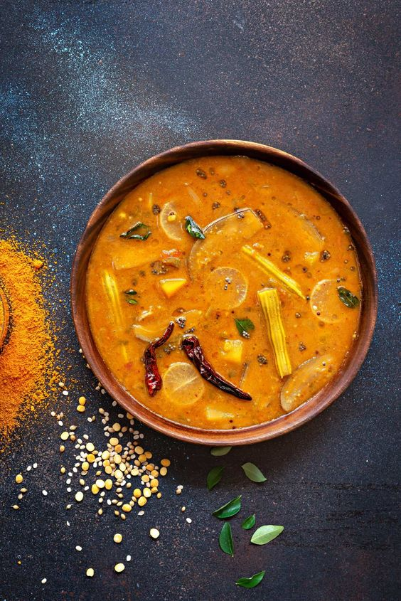

sambar

Description
Sambar is a popular South Indian lentil and vegetable stew, typically served with rice, idli, or dosa. Here is a basic recipe to prepare sambar at home.
Ingredients
- 2 cups water (for cooking toor dal)
- 1 tablespoon tamarind paste
- 2 cups mixed vegetables (e.g., carrots, potatoes, drumsticks, brinjal, pumpkin)
- 1 medium onion, chopped
- 1 medium tomato, chopped
- 2 green chilies, slit
- 1 teaspoon turmeric powder
- 1 tablespoon sambar powder
- 1 pinch asafoetida (hing)
Steps
- Wash 1 cup of toor dal thoroughly.
- In a pressure cooker, add the washed dal, 2 cups of water, and a pinch of turmeric powder.
- Cook for 3-4 whistles until the dal is soft and mushy.
- Once cooked, mash the dal well and set it aside.
- In a small bowl, dissolve 1 tablespoon of tamarind paste in 1 cup of warm water. Set it aside.
- Heat 2 tablespoons of oil in a large pot.
- Add 1 teaspoon of mustard seeds, 1 teaspoon of cumin seeds, a pinch of asafoetida, 10-12 curry leaves, and 2 dried red chilies.
- Once the mustard seeds start to splutter, add the chopped onions and sauté until they become translucent.